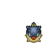
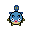

Pokédex / #211

Qwilfish #211
WaterPoison
The small spikes covering its body developed from scales. They inject a toxin that causes fainting.
Generation 2 · Johto

Stats
| Attack | 95 | |
|---|---|---|
| Defense | 75 | |
| Sp. Atk | 55 | |
| Sp. Def | 55 |
In the wild
| Wild level | 40–50 |
|---|---|
| HP | 65 |
| Experience | 12 |
| Egg groups | Water 2 |
Evolution
- Does not evolve.
Moves
| Level | Move | Type | Category | Power | Energy | Cooldown | Effect | |
|---|---|---|---|---|---|---|---|---|
| 1 | Tackle | Normal | Physical | 15 | 15 | 1s | Tackle is one of the most common and basic moves a Pokemon learns. It deals damage with no additional effects. | |
| 5 | Toxic Spikes | Poison | Status | 10 | 70 | 8s | Toxic Spikes deals damage and inflicts Poison, if the target already is Poisoned then inflicits Badly Poison. | |
| 10 | Poison Sting | Poison | Physical | 15 | 20 | 5s | Poison Sting inflicts damage and has a 30% chance of poisoning the target. | |
| 15 | Pin Missile | Bug | Physical | 25 | 60 | 9s | Pin Missile inflicts damage, hitting the target between 2-5 times per use. | |
| 20 | Supersonic | Normal | Status | – | 20 | 14s | Supersonic causes the target to become confused. | |
| 25 | Rollout | Rock | Physical | 5 | 70 | 35s | Rollout inflicts damage over five turns and raises the user's Speed by two stages. | |
| 30 | Water Gun | Water | Special | 40 | 45 | 9s | Water Gun inflicts damage and has no secondary effect. | |
| 35 | Revenge | Fighting | Physical | 120 | 120 | 18s | Revenge charge during 5 turns and then deals damage. | |
| 40 | Brine | Water | Special | 65 | 80 | 15s | Brine inflicts damage, and its power doubles to 130 when the target is at or below 50% health. | |
| 45 | Aqua Tail | Water | Physical | 90 | 90 | 14s | Aqua Tail deals damage and has no secondary effect. | |
| 50 | Poison Jab | Poison | Physical | 80 | 80 | 12s | Poison Jab inflicts damage and has a 30% chance of poisoning the target. | |
| 55 | Venoshock | Poison | Special | 65 | 75 | 16s | Venoshock inflicts damage and its power will double to 130 when the target is poisoned. | |
| 60 | Hydro Pump | Water | Special | 110 | 120 | 27s | Hydro Pump inflicts damage and has no secondary effect. | |
| 65 | Stockpile | Normal | Status | – | 90 | 10s | Raises the user's Defense and Special Defense by one stage and charges up power for use with companion moves Spit Up or Swallow. | |
| 65 | Spit Up | Normal | Special | 100 | 150 | 30s | Spit Up deals varying damage depending on how many times the user used Stockpile. The base power is 100, 200 or 300 if the user stockpiled one, two or three times respectively. |
Field abilities
WaterfallHeadbutt
Special abilities
Poison PointSwift Swim
Egg moves
Acid SprayAqua JetAstonishBrineBubblebeamFlailHazeSignal BeamSupersonicWater Pulse
Technical machines
BideBlizzardDefense CurlDouble EdgeDouble TeamExplosionHailHeadbuttIce BeamIcy WindMimicPoison JabRageRain DanceRestShadow BallShock WaveSludge BombSubstituteSwiftTauntThunder WaveToxicWater Pulse
Drops
| Item | Amount | Chance | |
|---|---|---|---|
| water gem | 1–13 | 97.2% | |
| bottle of poison | 1–13 | 97.2% | |
| thorn | 1 | 97.2% | |
| venom pendant | 1 | 87.5% | |
 | qwilfish doll | 1 | 0.1% |
| Splash Plate | 1 | 0.025% | |
| Toxic Plate | 1 | 0.025% | |
| held mystic water | 1 | 0.02% | |
| held poison barb | 1 | 0.01% | |
| TM 12 | 1 | 0.005% |